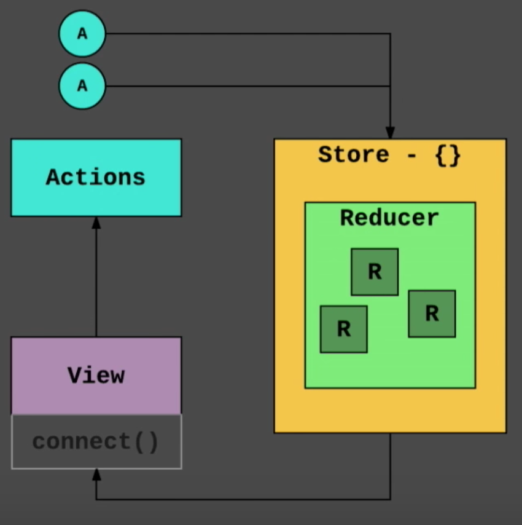
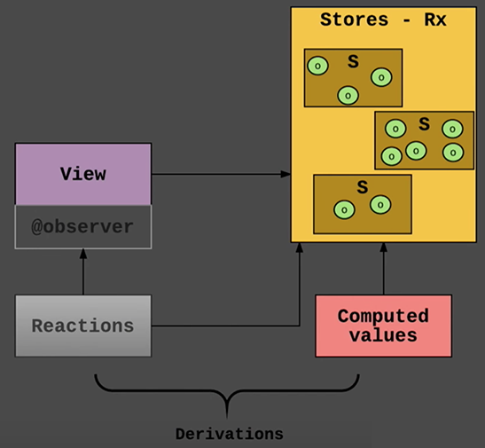

MobX

Wat is MobX?
MobX omschrijft zichzelf als volgt
MobX is a battle tested library that makes state management simple and scalable by transparently applying functional reactive programming (TFRP).
Anything that can be derived from the application state, should be derived.
Automatically.
- MobX
Wat is het verschil met Redux?
Redux
MobX
De verschillen
Redux
- Single store
- Plain objects
- Immutable
- Normalized state
MobX
- Multiple stores
- Observable data
- Mutable
- Nested state
Voordat we code gaan vergelijken...
De code voorbeelden gebruiken de volgende technieken die wij hier bij Label A niet gebruiken
- Decorators
- Observer Pattern
- Composition Pattern
Decorators
In het kort zijn Decorators gewoon "fancy" mixins / Higher Order Functions (HOC). De volgende code doet hetzelfde.
HOC nu
class User {
name = 'Sander';
age = 27;
}
withSomeHoc(User);
HOC als decorator
@withSomeHoc
class User {
name = 'Sander';
age = 27;
}
Observer Pattern
// an observable class
class DJ {
currentSong = { artist: 'Frans Duijts', title: 'Samen op het strand' };
subscribers = [];
subscribe = (observer) => {
this.subscribers.push(observer);
}
onSongChange = () => {
this.subscribers.forEach(observer => {
observer.update(this.currentSong);
});
}
}
const dj = new DJ();
// an observer class
class Partygoer {
constructor() {
// subscribe to DJ
dj.subscribe(this);
}
update = (song) => {
console.log(song);
}
}
Observer Pattern
Single store vs. Multiple stores
Redux
// playlist
const initialState = {
name = 'Funky songs';
};
const reducer1 = (state = initialState, action) => {
switch (action) {
default: return state;
}
}
// user
const initialState = {
name = 'Sander';
}
const reducer2 = (state = initialState, action) => {
switch (action) {
default: return state;
}
}
const reducers = combineReducers({ reducer1, reducer2 });
const store = createStore(reducers);
MobX
class PlaylistStore {
name = 'Funky songs';
}
class UserStore {
name = 'Sander';
}
const stores = {
userStore: new UserStore(),
playlistStore: new PlaylistStore(),
};
Actions
Redux
Actions are payloads of information that send data from your application to your store. They are the only source of information for the store.
const toggleTodo = (done) => ({
type: TOGGLE_TODO,
done,
})
MobX
Events invoke actions. Actions are the only thing that modify state and may have other side effects.
@action
onClick = (done) => {
this.done = done
}
Redux
- Zelf updates nagaan
- Expliciet
- Passief
MobX
- Gaat automatisch updates na
- Impliciet
- Reactief
Redux
- Read-only state
- prevState => newState
- Pure
MobX
- Read AND write to state
- state => state
- Impure
Redux
- Actions verplicht
const toggleTodo = (done) => ({
type: TOGGLE_TODO,
done,
})
const reducer = (state, action) => {
switch (action.type) {
case TOGGLE_TODO:
return {
...state,
done: action.done,
};
}
}
MobX
- Actions niet verplicht
<button
onClick={() => this.props.todoStore.done = true}
/>
Redux
- Normalize state
{
messages: {
byId: {
message1: {
id: 'message1',
author: 'user1',
body: '...',
},
/* ... more messages */
},
allIds: ['message1', /* ... */]
},
users: {
byId: {
user1: {
id: 'user1',
name: 'user1',
},
/* ... more users */
},
allIds: ['user1', /* ... */]
}
}
MobX
- Normalize state hoeft niet
@observable messages = [
{
id: 'message1',
author: 'user1',
body: '...'.
},
/* ... more messages */
];
@observable users = [
{
id: 'user1',
author: 'user1',
},
/* ... more users */
];
Code vergelijken
Opzet
Redux
import thunk from 'redux-thunk';
import todo from 'ducks/todo';
const middleware = applyMiddleware(thunk);
const reducers = combineReducers({ todo });
const store = createStore(reducers, middleware);
<Provider store={store}>
<App />
</Provider>
MobX
import todoStore from 'stores/TodoStore';
const stores = { todoStore };
<Provider {...stores}>
<App />
</Provider>
Segmenten
Redux
const TOGGLE_TODO = 'todo/TOGGLE';
const initialState = {
done: false,
};
export const reducer = (state = initialState, action) => {
switch(action.type) {
case TOGGLE_TODO:
return {
...state,
done: action.done,
}
default:
return state;
}
}
export const toggleTodoAction = (done) => ({
type: TOGGLE_TODO,
done
});
MobX
class TodoStore {
@observable done = false;
@action
toggleTodo = (done) => {
this.done = done;
}
}
Async
Redux
const FETCH_ALL_TODOS_LOADING = 'todo/FETCH_ALL_LOADING';
const FETCH_ALL_TODOS_SUCCESS = 'todo/FETCH_ALL_SUCCESS';
const FETCH_ALL_TODOS_FAILED = 'todo/FETCH_ALL_FAILED';
const initialState = {
data: [],
loading: false,
error: false,
};
export const reducer = (state = initialState, action) => {
switch(action.type) {
case FETCH_ALL_TODOS_LOADING:
return {
...state,
loading: true,
error: false,
};
case FETCH_ALL_TODOS_SUCCESS:
return {
...state,
loading: false,
error: false,
data: action.payload,
};
case FETCH_ALL_TODOS_FAILED:
return {
...state,
loading: false,
error: true,
};
default:
return state;
}
}
export const fetchAllTodos = () => async (dispatch) => {
dispatch({ type: FETCH_ALL_TODOS_LOADING });
try {
const response = await fetch('someapi.com/todos');
const data = await response.json();
dispatch({ type: FETCH_ALL_TODOS_SUCCESS, payload: data });
} catch (e) {
dispatch({ type: FETCH_ALL_TODOS_FAILED });
}
};
MobX
class TodoStore {
@observable data = [];
@observable loading = false;
@observable error = false;
@action
fetchAllTodos = async () => {
this.loading = true;
try {
const response = await fetch('someapi.com/todos');
const data = await response.json();
this.data = data;
this.loading = false;
} catch (e) {
this.loading = false;
this.error = true;
}
}
}
@asyncStore
class TodoStore {
@observable data = [];
@action
fetchAllTodos = () => {
this.data = this.api.get('someapi.com/todos');
}
}
function asyncStore(store) {
return class extends store {
@observable loading = false;
@observable error = false;
api = {
get: (path) => {
this.loading = true;
try {
const response = await fetch(path);
const data = await response.json();
this.loading = false;
this.error = false;
return data;
} catch (e) {
this.loading = false;
this.error = true;
}
}
}
}
}
Koppelen aan React
Redux
import { connect } from 'react-redux';
import { toggleTodoAction } from 'ducks/todo';
const TodoItem = (props) => (
<button onClick={() => props.toggleTodoAction(true)}>
Done!
</button>
);
export default connect(state => ({
todo: state.todo
}), { toggleTodoAction })(TodoItem);
MobX
import { observer, inject } from 'mobx-react';
@inject('todoStore')
@observer
class TodoItem extends React.Component {
render() {
return (
<button onClick={() => this.props.toggleTodo(true)}>
Done!
</button>
);
}
}
import { observer, inject } from 'mobx-react';
const TodoItem = inject('todoStore')(observer((props) => (
<button onClick={() => props.toggleTodo(true)}>
Done!
</button>
));
Redux vs. MobX
Learning Curve
Redux
"Nieuwe" FP technieken
Geen "magie"
MobX
Bekende OOP technieken
Meer "magie"
Boilerplate
Redux
Simpelere, kleinere syntax
Gebouwd met abstracties
Meer "magie"
MobX
Meer expliciet, meer syntax
Heeft meer "speciale" tools nodig (Thunk)
Geen "magie"
Developer Tools
Redux
Redux dev tools
Time Travel door immutability
MobX
Geen vervanger voor Redux dev tools
Geen Time Travel
Debuggability
Redux
Expliciet
One-way
Geen "magie"
MobX
Impliciet
Many-ways
Meer "magie"
Voorspelbaarheid
Redux
Expliciet
One-way
Pure
MobX
Impliciet
Many-ways
Impure
Modulariteit
Redux
Globaal gedeelde state
Encapsulation is niet strict
MobX
Duidelijke verdeling dmv meerdere stores
Toegang tot OOP patterns
Data/logica is encapsulated (omhult)
Schaalbaarheid / onderhoudbaarheid
Redux
Pure
Stricte orde van handelingen
Mutaties zijn gecentraliseerd
MobX
Impure
Geen stricte orde van handelingen
Mutaties kunnen overal gebeuren